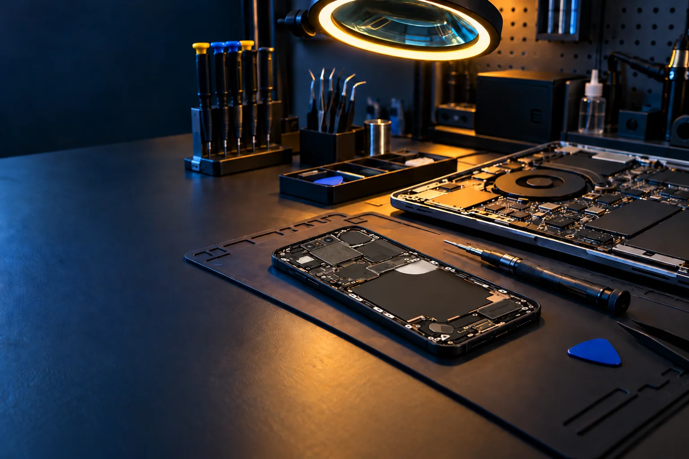
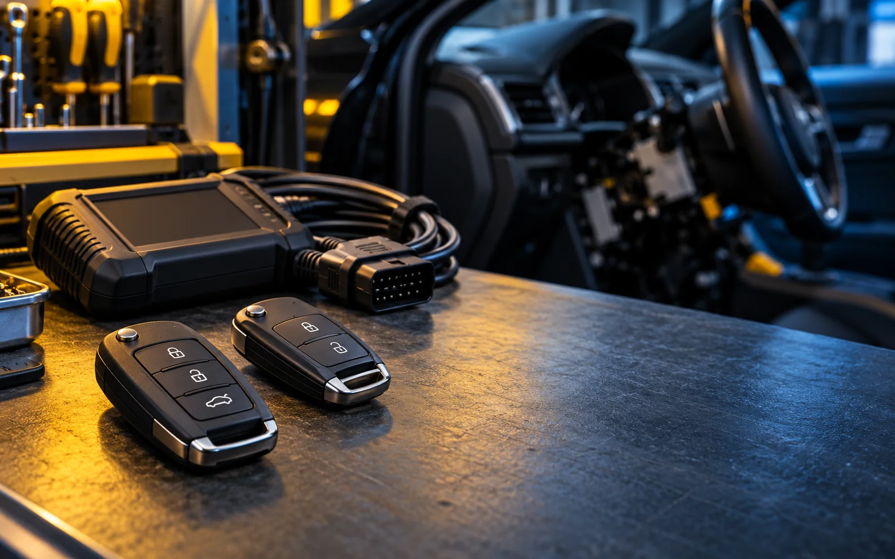

Diagnóstico
Revisión orientada a localizar el origen del fallo antes de plantear la intervención.

Servicio técnico local · Ayamonte
Dos áreas técnicas, un contacto directo: móviles y ordenadores; llaves, mandos y electrónica del vehículo.
Imagen representativa generada para esta web.
Taller técnico en Ayamonte
Explícanos qué ocurre y revisaremos contigo el servicio adecuado. Sin promesas automáticas: cada dispositivo, llave o vehículo necesita una valoración propia.
Revisión orientada a localizar el origen del fallo antes de plantear la intervención.
Trabajo técnico sobre electrónica de consumo y sistemas asociados al vehículo.
Atención desde el establecimiento de C. Padre Álvarez, 30, por teléfono o correo.

FIXITEA Autollaves
Duplicado de llaves, reparación de mandos, cerraduras y bombines, sistemas de cierre y arranque y diagnosis electrónica del vehículo.
Imagen representativa generada para esta web; no muestra un trabajo concreto.
Cómo empezar
Para orientarte mejor, indica el tipo de dispositivo o vehículo y describe el síntoma con el mayor detalle posible.
Llama, escribe o acércate al establecimiento.
Explica el equipo y el problema que has detectado.
Recibe una orientación inicial y confirma el siguiente paso.
Habla con FIXITEA
Cómo llegar
Consulta la ruta desde tu punto de partida. El enlace se abre en Google Maps.